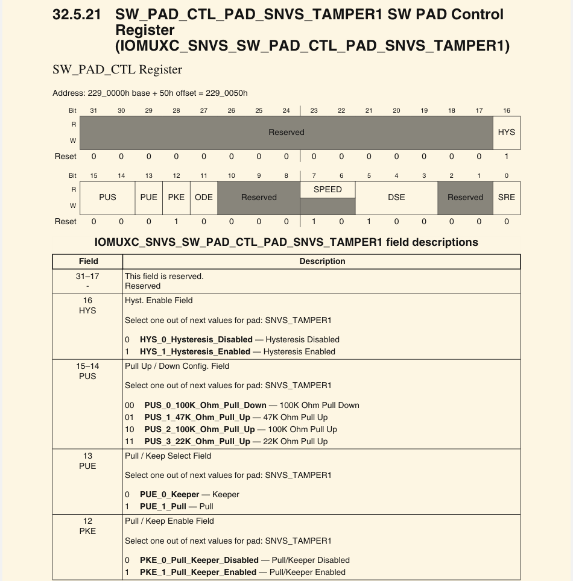
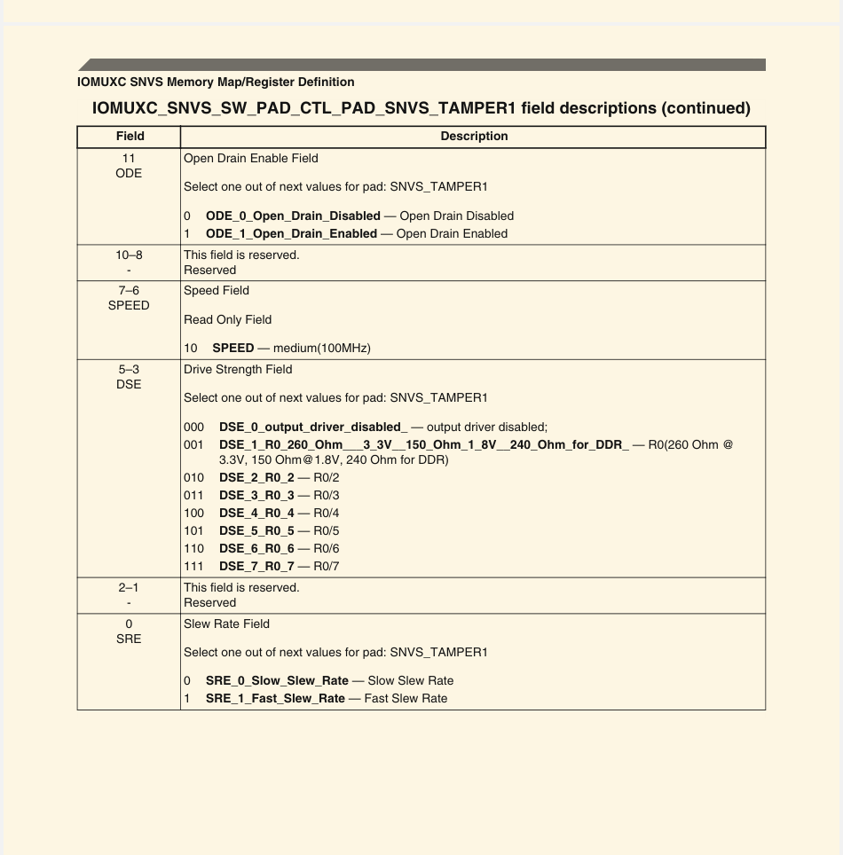

版权信息
warning
本文章为博主原创文章。遵循 CC 4.0 BY-SA 版权协议，转载请附上原文出处链接和本声明。
IMX6ULL参考手册中，一个电气属性配置寄存器说明如下，我们来解读一下。


这个寄存器属于 IOMUXC_SNVS，作用是：
配置 SNVS_TAMPER1 引脚的电气特性（如上下拉、电驱动能力、开漏、速度等）。 它不负责选择复用功能（MUX），只负责“PAD 控制”。
一. 寄存器总体功能概述
SW_PAD_CTL_PAD_SNVS_TAMPER1 提供以下功能配置：
| 功能方向 | 子功能 |
|---|---|
| 输入端 | 上下拉、保持、迟滞 Hysteresis |
| 输出端 | 开漏使能、驱动强度、slew rate（边沿速度） |
| PAD 行为 | SPEED（在 SNVS 区域通常是固定值） |
| 保护 | 部分位保留不用 |
下面按位说明。
二. 逐字段解析（由高到低位）
31–17：Reserved
这些位保留，写什么都没用。
16: HYS — 输入迟滞（Hysteresis）使能
作用： 让输入信号增加抗抖动能力，在信号接近阈值边缘时不容易误触发。
| 值 | 含义 |
|---|---|
| 0 | 不启用迟滞（输入信号干净时使用） |
| 1 | 启用迟滞（抗干扰更好，推荐给按键/慢信号） |
15–14：PUS — 上下拉电阻配置
只对输入有效。
| PUS 值 | 电阻配置 | 说明 |
|---|---|---|
| 00 | 100K 下拉 | 拉低 |
| 01 | 47K 上拉 | 稍强的上拉 |
| 10 | 100K 上拉 | 弱上拉 |
| 11 | 22K 上拉 | 强上拉 |
要使用这些上下拉，必须配合 PUE=1 和/或 PKE=1。
13: PUE — Pull / Keeper 选择
决定启用 Pull 还是 Keeper。
| 值 | 含义 |
|---|---|
| 0 | Keeper（保持器）启用：用于保持原状态（不是真上下拉） |
| 1 | Pull（真正的上下拉电阻）启用 |
一般如果你希望确定逻辑电平（输入），就把 PUE=1。
12: PKE — Pull/Keeper 使能
是否启用 pull/keeper 模块。
| 值 | 含义 |
|---|---|
| 0 | 禁用 Pull/Keeper |
| 1 | 使能 Pull/Keeper（由 PUE 决定是 Pull 还是 Keeper） |
即：PKE=1 时，PUE 决定到底是“pull”还是“keeper”。
11: ODE — 开漏输出使能（Open Drain Enable）
| ODE | 含义 |
|---|---|
| 0 | 普通输出模式 |
| 1 | 开漏模式（Open-drain） |
开漏常用于：
- I²C SDA/SCL
- 多设备共享信号线
- 需要外拉电阻的场景
10–8：Reserved
无意义。
7–6: SPEED — I/O速度（通常 Read Only，SNVS区域固定）
在 SNVS 区域一般固定为：
| 值 | 含义 |
|---|---|
| 10b | medium (100 MHz) |
但 SNVS 的 tamper pin 本质上通常是低速接口，因此 SPEED 通常不重要。
5–3: DSE — Drive Strength（驱动能力）
配置输出引脚的驱动强度（等效电阻 R0/n）。
| DSE | 驱动能力 | 含义 |
|---|---|---|
| 000 | 关闭输出驱动 | 不输出（禁用） |
| 001 | R0/1 | 最强 |
| 010 | R0/2 | 强 |
| 011 | R0/3 | 中等 |
| 100 | R0/4 | |
| 101 | R0/5 | |
| 110 | R0/6 | |
| 111 | R0/7 | 最弱 |
驱动越强，负载越大，下降上升越快，但 EMI 可能会增大。
2–1：Reserved
不用配置。
0: SRE — Slew Rate（输出转换速度）
控制输出电平变化的快慢：
| 值 | 含义 |
|---|---|
| 0 | Slow（慢速）→ EMI 小 |
| 1 | Fast（快速）→ 边沿快、驱动高频信号 |
一般：
- 高频信号 → Fast（1）
- 普通 GPIO → Slow（0）
- 有 EMI 要求 → Slow（0）
三. 功能汇总
| 功能类别 | 字段 | 作用 |
|---|---|---|
| 输入配置 | HYS | 输入迟滞（抗干扰） |
| PUS | 使用哪种上下拉电阻 | |
| PUE/PKE | 启用上下拉或保持器 | |
| 输出配置 | ODE | 开漏输出 |
| DSE | 驱动强度 | |
| SRE | 信号边沿速度 | |
| 常规 | SPEED | I/O速度（SNVS一般固定） |
| Reserved | 保留位 |
四. 典型使用例子
配置为输入上拉
例如一个按键输入：
HYS = 1 # 开启迟滞
PKE = 1 # 使能 pull/keeper
PUE = 1 # 使用 pull 模式
PUS = 10 # 100K 上拉
ODE = 0 # 输入不需要开漏② 配置为 I²C SDA/SCL（开漏 + 上拉）
ODE = 1 # 开漏
PKE = 1
PUE = 1
PUS = 10 # 上拉
SRE = 1 # 快速速度
DSE = 110 # R0/6③ 配置为普通 GPIO 输出
ODE = 0 # 普通推挽
DSE = 100 (R0/4) # 中等驱动
SRE = 1 # 快速或视环境选